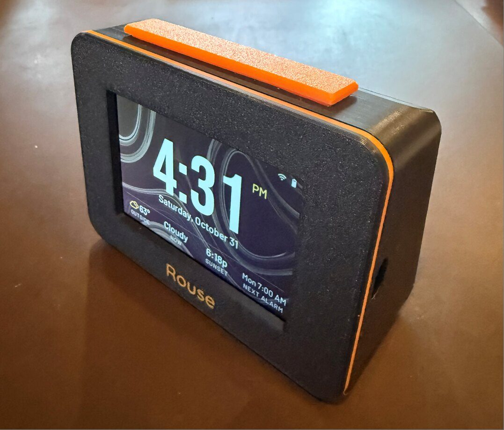
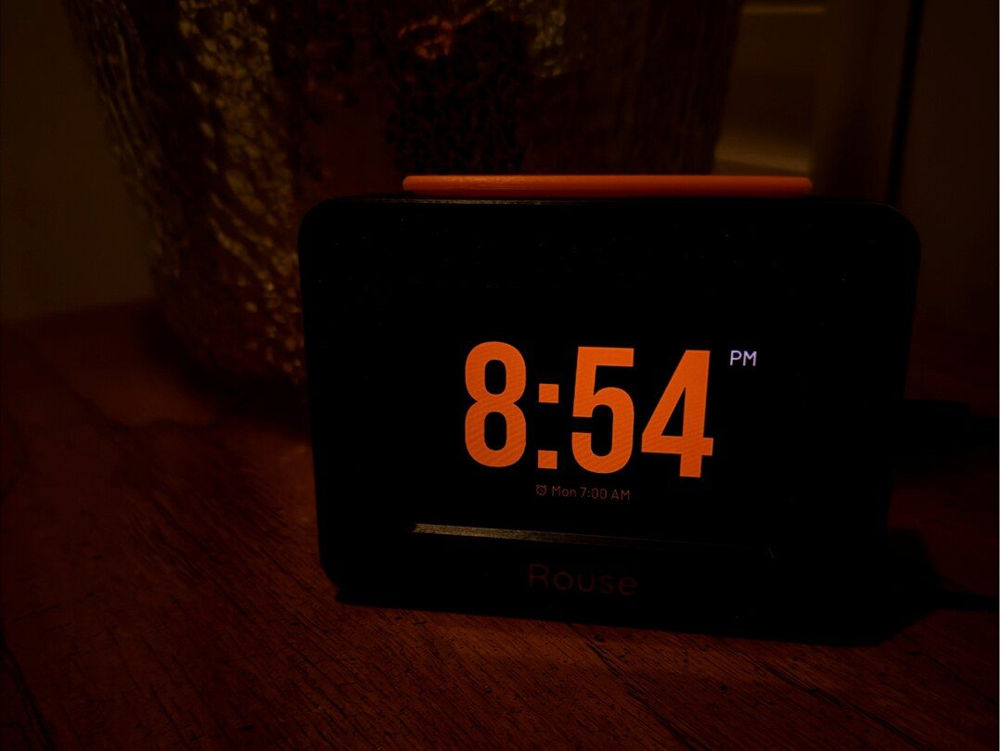
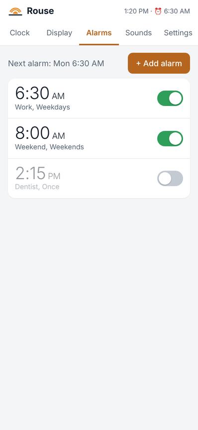
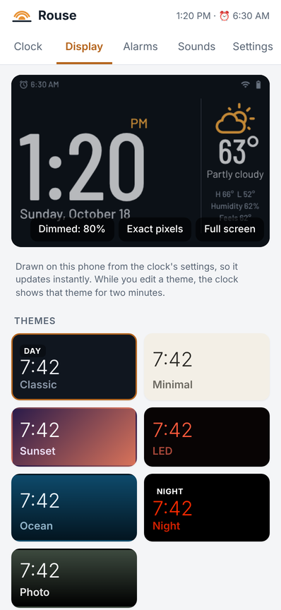
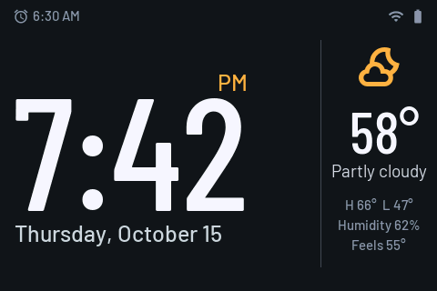
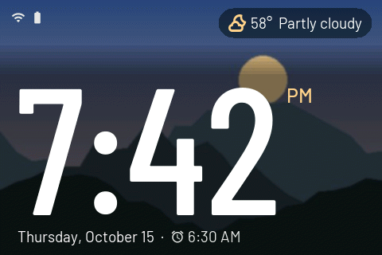
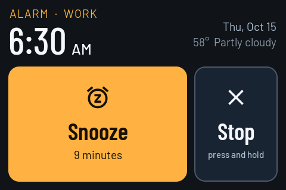
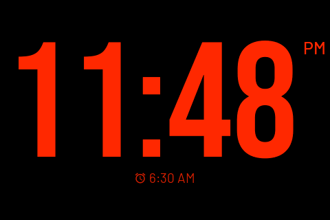
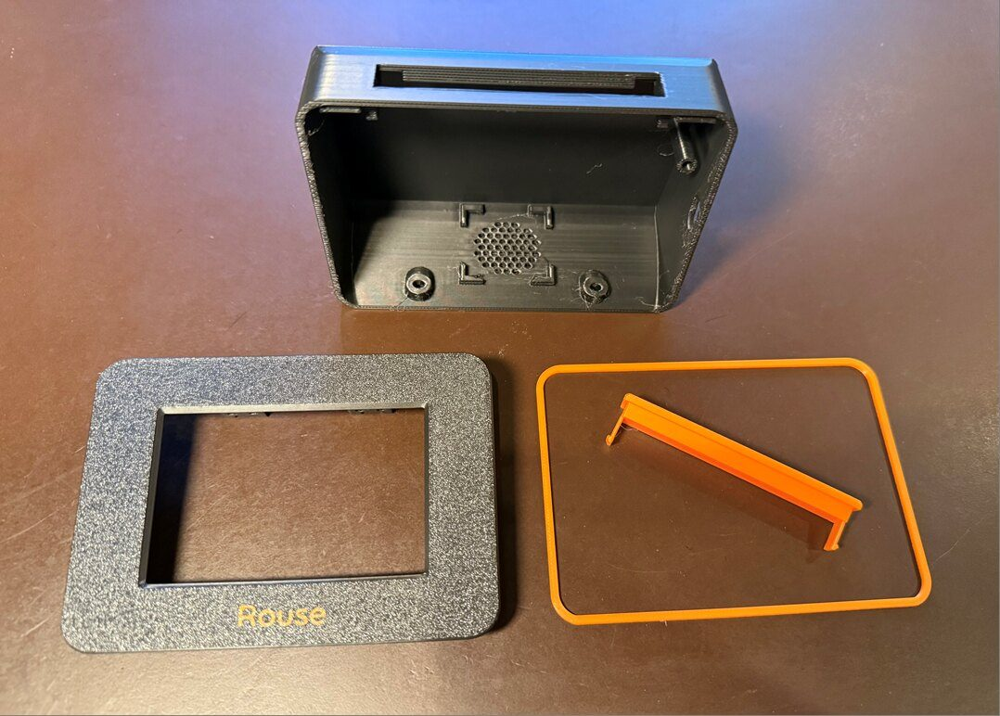

Alarms that fit your week
Up to ten alarms, each with its own days, sound, volume and snooze length. Skip the next one for a holiday without turning it off.
A bedside alarm clock you make
Rouse is an alarm clock on a 3.5-inch touch display, in a 3D-printed case with a real snooze bar on top. You set it up from your phone's browser: no app to install, no account, no subscription.
Free firmware for three popular ESP32 display boards · version 1.0.0

Up to ten alarms, each with its own days, sound, volume and snooze length. Skip the next one for a holiday without turning it off.
The volume can rise slowly, and the screen can brighten like a sunrise before the alarm. Heavy sleeper? There's Extra loud.
Press the bar on top to snooze, hold it to stop. No hunting for a button on the screen at 6 a.m. On the Waveshare board, just tap the case: once to snooze, twice to stop.
Outside temperature, today's high and low, sunrise or sunset and your next alarm, from Open-Meteo. No API key needed.
Pick a theme or make your own: colors, clock fonts, what's shown. Use your own photos as the background, or a daytime slideshow.
White, pink and brown noise, rain, ocean waves and a fan, made on the clock itself, with a sleep timer. Add your own sounds too.

At bedtime Rouse dims itself and switches to a deep red night theme, the color that's easiest on sleepy eyes. A tap brightens it for a moment; in the morning it switches back on its own.
With the optional battery it keeps running through a power outage, so the alarm still rings.
Every Rouse has its own web page on your home WiFi. Open rouse.local on your phone or computer to set alarms, edit themes, upload photos and sounds, back up your settings and install updates. It shows a live preview of the clock as you change things.
Nothing leaves your home network except the weather and time lookups. Add a PIN if others share your WiFi.






You need a display board, a 3D printer (or a friend with one) and about an hour. The Build Guide walks through every step with photos.
Recommended
ESP32-S3, 3.5" IPS screen with glass touch, built-in speaker amplifier and battery connector. Holds up to 64 photos.
ESP32-S3, 3.5" IPS glass touch screen. Waveshare's own enclosure drops into its own Rouse case, with nothing to wire: its motion sensor lets you tap the case to snooze. Holds up to 64 photos.
The low-cost classic ESP32 3.5" board with a pressure-sensitive screen (a stylus works best; the case can hold one). Holds up to 3 photos.
Four parts: body, bezel with the name, accent ring and snooze bar. A ready-to-print Bambu Studio project and STL files are on the downloads page.
Plug the board into a computer and click Install on the web installer in Chrome or Edge. It takes less than a minute; nothing to download.
Add the snooze switches, speaker and (optional) battery (the Waveshare needs no wiring at all), close the case with two screws, and join the clock to your WiFi from your phone.

The parts print with supports in just two small spots, already marked in the Bambu Studio project. Two colors or one: the name can be inlaid or engraved. Three body versions: with the snooze bar and a stylus holder, with the snooze bar only, or plain.
The firmware, manuals and print files are free. If you enjoy your Rouse, a tip helps pay for new hardware to test and new features.